スイッチ本体の「設定」を開きます
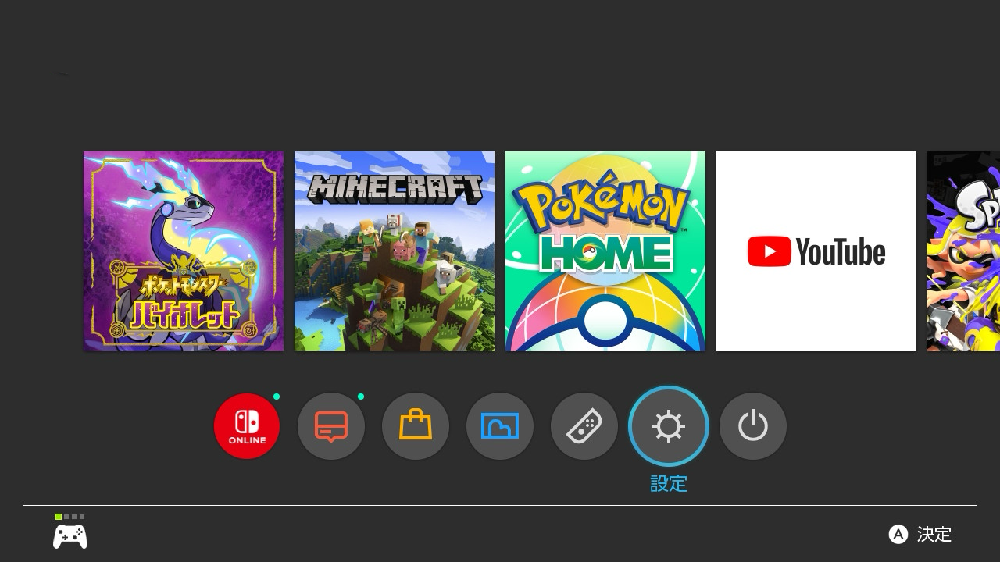「インターネット」欄の一番上のインターネット設定を開きます
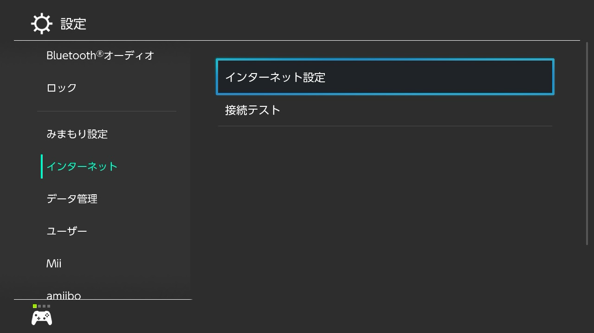チェックマークがついたインターネットを開きます
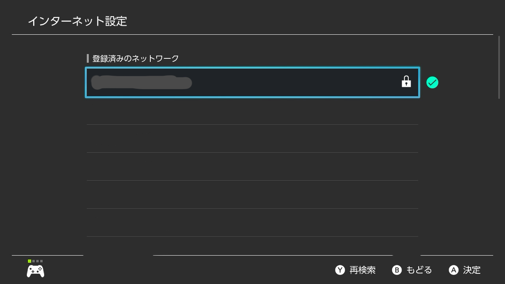設定の変更を押します
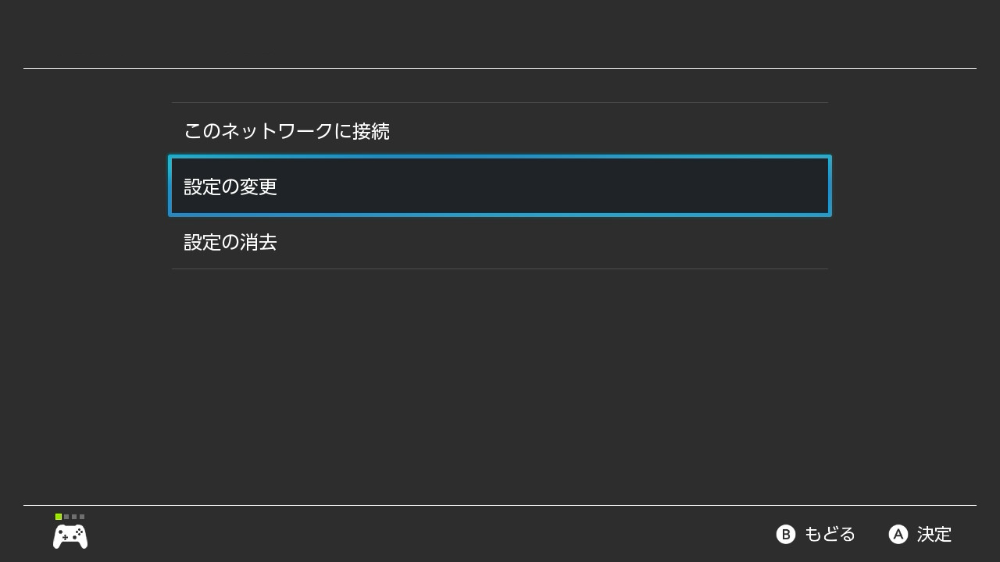設定画面を開いたら少し下にスクロールしてDNS設定を見つけます
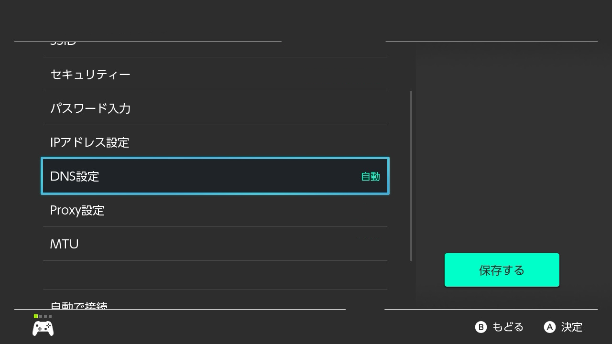DNS設定を選択し「自動」から「手動」に変更します
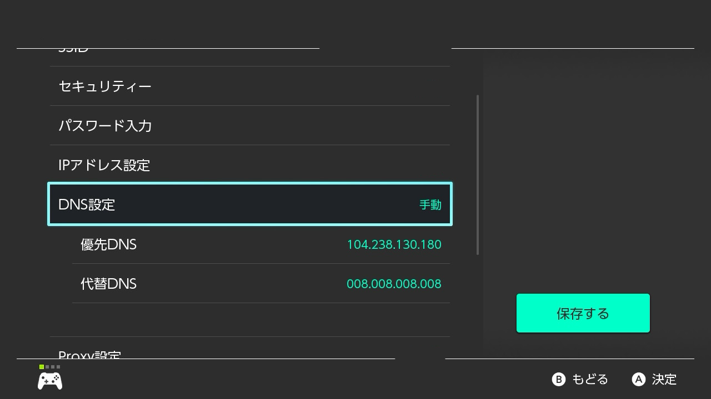以下のように設定を変更します
| 優先DNS | 104.238.130.180 |
|---|---|
| 代替DNS | 008.008.008.008 |
変更出来たら保存を押します
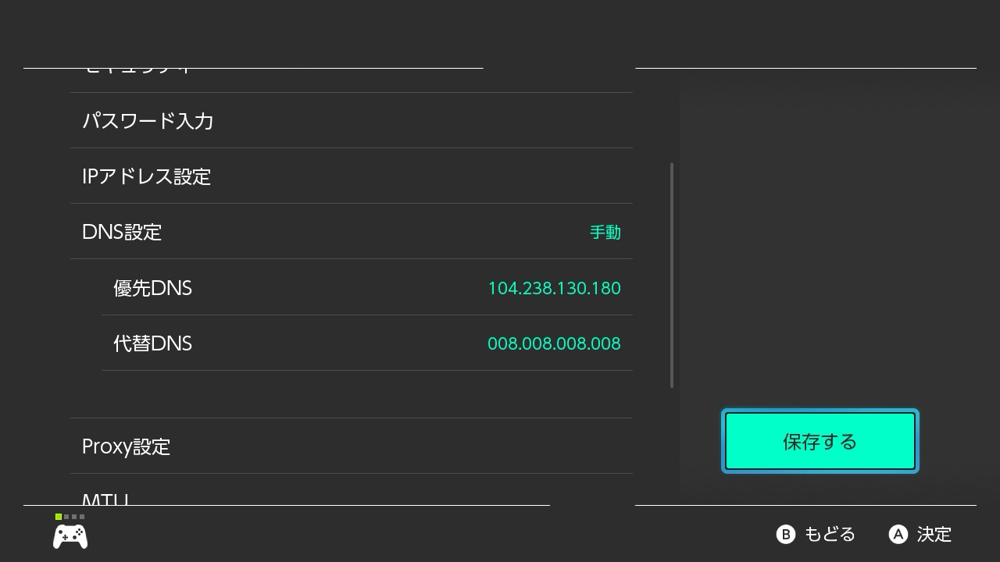Minecraftを起動します
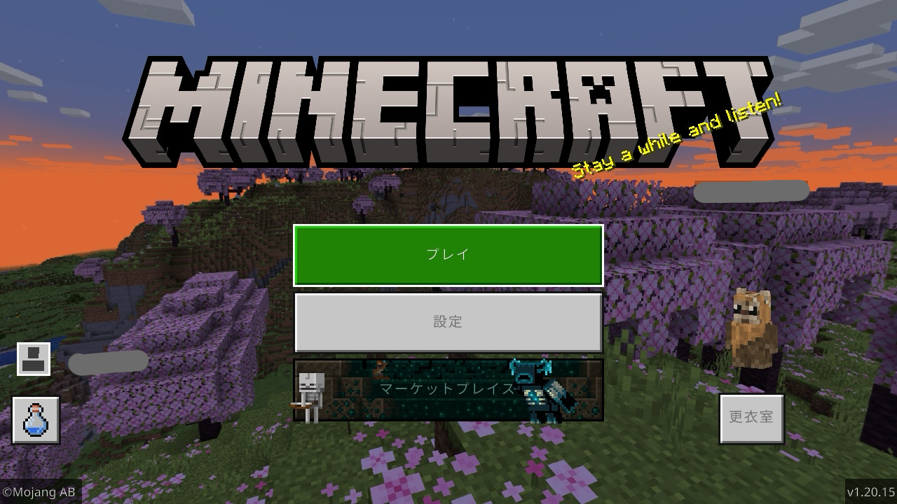プレイを押しサーバー画面に行きます
サーバーはどこでもいいので接続を押します
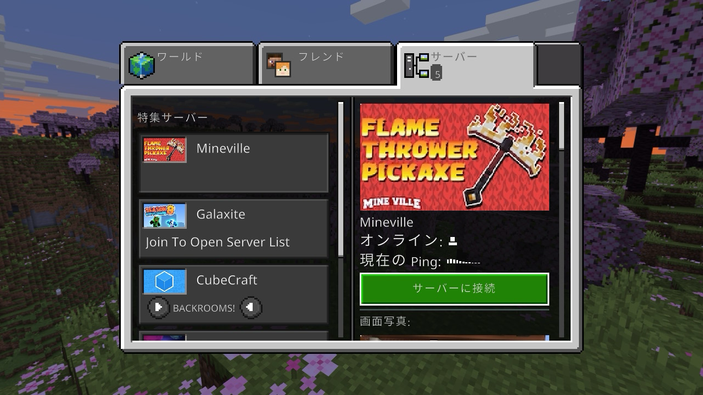「Server List」という画面が出たら「Connect to a Server」を選択します
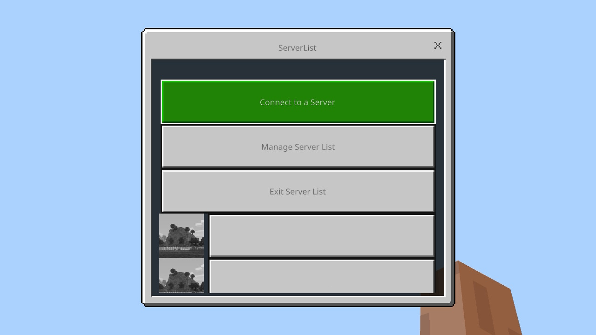すると以下の画像のような画面が出てきます。
出てきた画面に下記の情報を入力します
| Server Address | サーバーのIPアドレスを入力します |
|---|---|
| Server Port | 変更しない |
| Display Name on Server List | どんな名前でもOK |
必ずAdd to server listをオンにして送信ボタンを押す
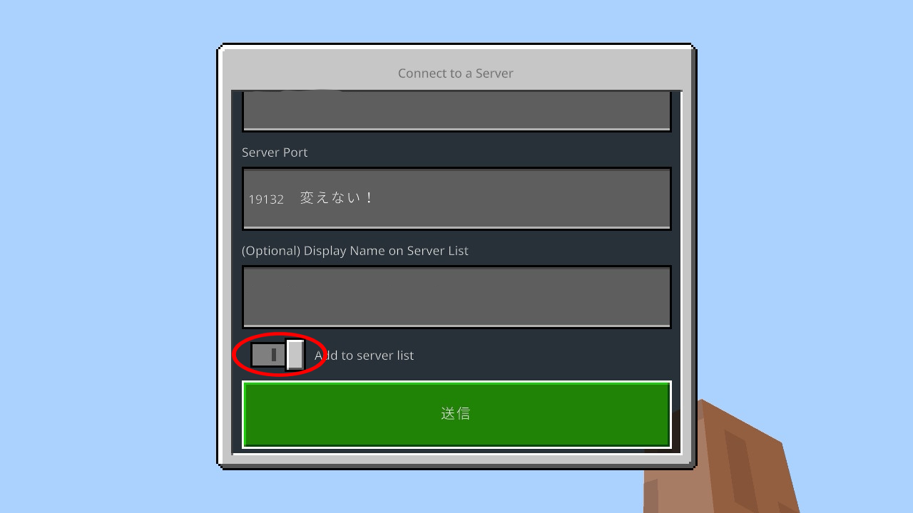これでOK